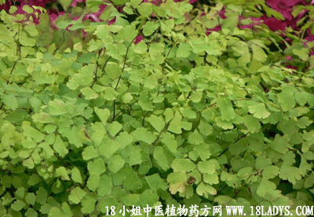

(本文解释权归中药材天地网兄弟站-中药大全-中医植物药方网所有,如需转载请注明出处)
铁线草(中药材植物名:过坛龙)(植物科目:铁线蕨科)

别名：乌蝇翼、黑骨廊基、乌脚枪。
植物名：过坛龙。
生长环境：本品为草本。多生于山地树林下阳光比较充足的酸性土壤上。
分布：广东各地多有出产，华南、西南各省均有；此外亚洲热带地区亦有。
入药部分：全草。
采集期：全年。
自采地点：山岗。
性味：性凉、利水祛湿。
主治、用量和用法：1、黄疸：干用4两，加黄糖2两，清水煎服；2、痢疾：干用1～2两，清水煎服；3、大便下血：用法同上；4、跌打肿痛：干用1～2两，煎水冲酒服，将渣敷患处。
验方：（治痢疾大便下血方）干铁线草5钱、干井栏荽5钱、干火痰母5钱，清水三碗，煎城一碗服。
（方解）方中铁线草止痢疾，井栏荽清湿热，火炭母清热解毒祛湿，故湿热下痢及大便下血患者，用之有效。
（方歌）大便下血或疴痢，皆由湿热广肠寄，铁线炭母井栏荽，祛湿清热发须记。
参考资料：《广东中医》（1959.1）介绍铁线草治颈部淋巴结核，一般在服药过程中，患者食欲增进，体重增加，病情可见精神活泼，嘻游自若，至于罹患淋巴结改变，当早期未溃时，可见肿物渐渐消失，已脓溃或痿骨形形成则逐步收口以至愈合，遗留瘢痕，证明本品有效。
又：本品有两种，以其根如金狗脊有毛茸者真。
(本文解释权归中药材天地网兄弟站-中药大全-中医植物药方网所有,如需转载请注明出处)